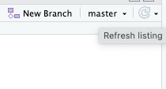
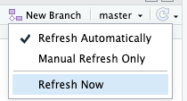

Hiding a secret API token
An article that explains something.
I plan to write an R Package. I will call it hypo2md, and it should search and import annotations from Hypothes.is into R markdown files. I need this functionality to process my highlights and comments generated during reading in my note-taking app Obsidian.
But writing about my package plans is not the goal of this post. Here I want to describe one of the learnings I had during my first experiments with the Hypothes.is API.
Reading the two articles by Hadley Wickham about httr2 R package (get started and wrapping APIs), I learned the basics of how to interface with APIs. As Hypothes.is requires an API user token, one particular problem I would need to overcome is secret management.
Even after reading the detailed instructions multiple times, the code described in “Wrapping APIs” didn’t work for me. As I finally solved the problem, I thought my errors could be interesting for other Newbies as well.
5 steps to hide your secrets
I am not going to use executable R program code for the explanation. It is difficult to show the functionality in a blog post and it may be even more difficult to prevent misunderstanding as it happened with me, when I followed the code.
Note that there are five types of callouts, including: note, warning, important, tip, and caution.
This is an example of a callout with a title.
This is an example of a ‘folded’ caution callout that can be expanded by the user. You can use collapse="true" to collapse it by default or collapse="false" to make a collapsible callout that is expanded by default.
Some formatting commands
Terminal
quarto create-project myproject``` {.yaml fil en ame=“_quarto.yml”} format: html: toc: true bibliography: - refs.bib ``` |
``` {.yaml filen am e=“dir/_metadata.yml”} format: html: code-fold: true bibliography: - proj.bib ``` |
``` {.yaml f i lename=“merged”} format: html: toc: true code-fold: true bibliography: - refs.bib - proj.bib ``` |
|
{. yaml filename="dir/_metadata.yml"} format: html: code-fold: true bibliography: - proj.bib |
This here is a text to explain how the program is working. I am using a table to format the different aspect of the code. It is possible to write text in two separate columns. But it seem complex to produce the table. Maybe one could use a table generator? |
` {.yaml filename=“dir/_metadata.yml”} format: html: code-fold: true bibliography: - proj.bib ``` |
| Default | Left | Right | Center |
|---|---|---|---|
| It is possible to write text in | 12 | 12 | 12 |
| two separate columns. But it seem | 123 | 123 | 123 |
| complex to produce the table. | 1 | 1 | 1 |
Table generated from Tables Generator
| O r igin === ==== Cli p ping N otes | So urce ====we b-cl ip ping |
Note type === ==== | Cat e gory === ==== | Su b ject === ==== | E moji ===🌐 |
Code ===0w |
T itle === |
||
| E m ails | ??? | ??? | 📬 | 0e | |||||
| Per s onal | a pi-a rt icle pb | per s onal | 🙋🏻♂️ | | | | | | | | 0pi | | | | | | | | | PI | | | | | | | | | | | | | | | | | | | | | | | | | | | | | | | | | | | ||||||
| Pr i vate | scan up hold ge orge jo plin | pr i vate | fi n ance h e alth | 🆔 | 0id | FI GH | |||
| Rea d wise Ar t icle | re ader a pi-a rt icle | art i cles | 📄 | 0a | FNA LNA | ||||
| Rea d wise Book | re ad wise | b ooks | 📖 | 0b | FNB LNB | ||||
| Rea d wise Pod c asts | 🔉 | 0po | FNP | ||||||
| Rea d wise Tw i tter | t wi tter | t w eets | 🐥 | 0t | |||||
| Z e ttel | misc | ||||||||
Table with RStudio Visual Editor
| Col1 | Col2 | Col3 |
|---|---|---|
| Here I got the first row | sadfsadf | sdafasdf |
| How about two or more lines in one row | asdfasdf | asdfasdf |
| Last row | asdfsadf | sdfasdf |
 |
 |


Figure divs
Using figure divs for text
This is the left column.
This is the right column.
I am not going to use executable R program code for the explanation. It is difficult to show the functionality in a blog post and it may be even more difficult to prevent misunderstanding as it happened with me, when I followed the code.
I am not going to use executable R program code for the explanation. It is difficult to show the functionality in a blog post and it may be even more difficult to prevent misunderstanding as it happened with me, when I followed the code.
Two columns Layout in Quarto
First column
I would like to have text here
Sentence becomes longer, it should automatically stay in their column
Second column
and here
More text
Two columns Layout in Quarto with layout-nrow=4 (pb)
Zeile 1a
Zeile 1b
Zeile 2a
Zeile 2b
Zeile 3a
Zeile 3b
Zeile 4a
Zeile 4b
Two columns Layout in Quarto with layout-ncol=2 (pb)
Zeile 1a
Zeile 1b
Zeile 2a
Zeile 2b
Zeile 3a
Zeile 3b
Zeile 4a
Zeile 4b
Two columns Layout in Quarto (Stackoverflow)
First column
Second column
I would like to have text here
and here
Sentence becomes longer, it should automatically stay in their column
More text
Two columns Layout in Quarto (Variant 2)
First column
Second column
I would like to have text here
and here
Sentence becomes longer, it should automatically stay in their column
More text
Two columns Layout in Quarto (Version 1)
First column
Second column
I would like to have text here
and here
Sentence becomes longer, it should automatically stay in their column
More text
Two columns Layout in Quarto (Version 2)
First column
Second column
I would like to have text here
and here
Sentence becomes longer, it should automatically stay in their column
More text